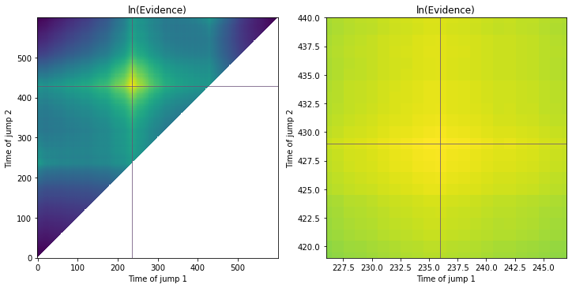
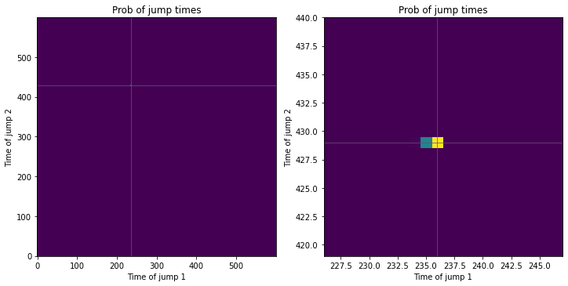
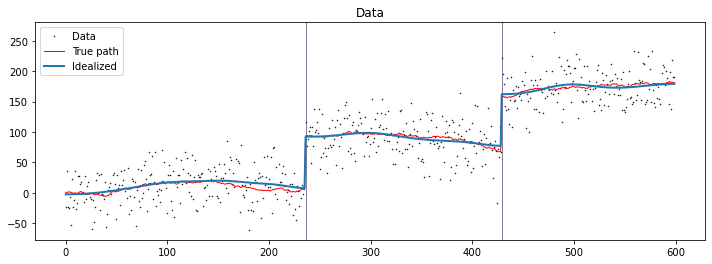
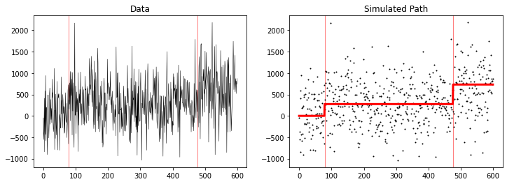
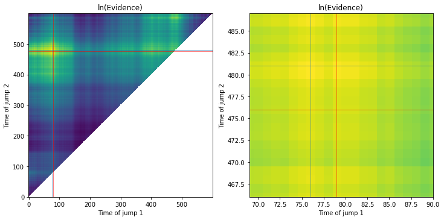
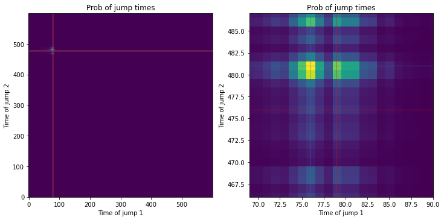
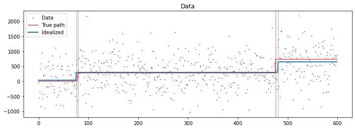

Code
import numpy as np
import matplotlib.pyplot as pltDetecting steps in noisy data is an important challenge in data analysis. Step detection falls under the scheme of change-point analysis methods, where, in this case, the change point corresponds to a transition in the level of the idealized signal (beyond changes in the signal due to noise and drift).
Here, we try to detect steps in a time series dataset by modelling the shape of such steps in the data. For example, a dataset containing 2 steps has a different shape than one with 1 or no steps, and as such, this can be used to find the positions of these steps in a time series.
Here, we generate templates which corresponds to steps at different time points, and compare these shapes to the observed data to find which template matches the shape of the data best. This allows us to identify the time points for the steps based on this matching. The only assumptions made in such an approach is that the steps are in the same direction (either all up or all down) and that the change in intensity associated with each step is identical.
import numpy as np
import matplotlib.pyplot as pltFirst, we generate a dataset which corresponds to the simulation of two jumps over 600 data points, each with SNR of ~3. This regime of SNR is very reasonable for single-molecule data, which this dataset is meant to replicate. The dataset also contains a non-zero drift in addition to the noise associated with reading each data point. This dataset is plotted below.
np.random.seed(666)
nt = 600
nj = 2
jump_size = 100.
noise_size = 30.
drift_size = 1.
tjumps = np.random.randint(low=0,high=nt,size=nj)
tjumps.sort()
zsteps = np.random.normal(size=nj)*noise_size + jump_size
noise = np.random.normal(size=nt)*noise_size
drift = (np.random.normal(size=nt)*drift_size).cumsum()
z = np.zeros(nt)
for i in range(nj):
z[tjumps[i]:] += zsteps[i]
data = z + drift + noise
snr1 = zsteps[0]/np.std((noise+drift)[:tjumps[1]])
snr2 = zsteps[1]/np.std((noise+drift)[tjumps[0]:])fig,ax = plt.subplots(1,2,figsize=(12,4))
ax[0].plot(data,'k',lw=.5)
ax[1].plot(data,'o',color='k',markersize=1)
ax[1].plot(z+drift,lw=2,color='r')
for aa in ax:
for i in range(nj):
aa.axvline(x=tjumps[i],color='r',lw=1,zorder=-1,alpha=.5)
ax[0].set_title('Data')
ax[1].set_title('Simulated Path')
plt.show()
The evidence function used here corresponds to equation 2.2.1 in the SI of the Bayesian shape calculation paper. This is a custom loop (just in time compiled in Numba for fast execution) that searches for all non-degenerate pairs of jumps (t1 < t2) longer than 1 datapoint long, by using templates which corresponds to these jumps. According to these templates and evidence, jumps can be both up or both down and still be detected. Having an up and then down jump (or vice versa) requires an additional template to be added to the loop.
import numba as nb
from scipy.special import betainc,gammaln
from math import lgamma
@nb.njit
def shape_calculation(data):
nt = data.size
## Constant evidence statistics
N = float(nt)
M = (N-2.)/2.
ey = np.mean(data)
eyy = np.mean(data*data)
vy = eyy - ey*ey + 1e-300 ## helps with over/underflow
lndelpriors = np.log(1e30) + np.log(1e30) + np.log(1e30)
base_lnev = lgamma(M) -N/2.*np.log(N) - M*(np.log(np.pi) + np.log(vy)) - lndelpriors
## Initialize
lnevs = np.zeros((nt,nt)) + np.nan
template = np.zeros_like(data)
for i in range(nt): ## sweep jump 1
for j in range(i+2,nt): ## sweep jump 2
## make the template
template *= 0
template[i:] = 1
template[j:] = 2
## Template-dependent evidence statistics
ex = np.mean(template)
exx = np.mean(template*template)
exy = np.mean(template*data)
vx = exx - ex*ex + 1e-300 ## helps with over/underflow
vxy = exy - ex*ey + 1e-300 ## helps with over/underflow
r2= vxy**2./(vx*vy)
## Evidence - 2.2.1 - m in R, b in R, tau > 0
## allows for steps up and steps down
lnevs[i,j] = base_lnev -.5*np.log(vx)
lnevs[i,j] -= M*np.log(1.-r2)
return lnevsHere, we calculate the evidences of each template (pair of jumps), and then calculate the probability of them using Bayesian model selection (BMS).
ln_evs = shape_calculation(data)
_l = ln_evs[np.isfinite(ln_evs)]
_l -= np.max(_l)
ln_prior = -np.log(_l.size) ## equal 1/N priors
joint = np.exp(_l+ln_prior)
bms_probs = np.zeros_like(ln_evs)
bms_probs[np.isfinite(ln_evs)] = joint/joint.sum()
# Jumps are found at
location = np.nonzero(bms_probs == bms_probs.max())
t1 = location[0][0]
t2 = location[1][0]fig,ax = plt.subplots(1,2,figsize=(12,6))
for aa in ax:
aa.imshow(ln_evs.T,origin ='lower',interpolation='nearest')
aa.set_xlabel('Time of jump 1')
aa.set_ylabel('Time of jump 2')
aa.set_title('ln(Evidence)')
aa.axvline(tjumps[0],color='r',lw=.5)
aa.axhline(tjumps[1],color='r',lw=.5)
aa.axvline(t1,color='tab:blue',lw=.5)
aa.axhline(t2,color='tab:blue',lw=.5)
ax[1].set_xlim(tjumps[0]-10,tjumps[0]+11)
ax[1].set_ylim(tjumps[1]-10,tjumps[1]+11)
plt.show()
fig,ax = plt.subplots(1,2,figsize=(12,6))
for aa in ax:
aa.imshow(bms_probs.T,origin ='lower',interpolation='nearest')
aa.set_xlabel('Time of jump 1')
aa.set_ylabel('Time of jump 2')
aa.set_title('Prob of jump times')
aa.axvline(tjumps[0],color='r',lw=.5)
aa.axhline(tjumps[1],color='r',lw=.5)
aa.axvline(t1,color='tab:blue',lw=.5)
aa.axhline(t2,color='tab:blue',lw=.5)
ax[1].set_xlim(tjumps[0]-10,tjumps[0]+11)
ax[1].set_ylim(tjumps[1]-10,tjumps[1]+11)
plt.show()
plt.show()
It’s an exact match! Let’s see where we’ve predicted the jumps as overlaid over the real data.
# We can idealize the trace a rolling average of each region
from scipy import ndimage as nd
idealized = np.zeros_like(data)
width = 20
idealized[:t1] = nd.gaussian_filter(data[:t1],width)
idealized[t1:t2] = nd.gaussian_filter(data[t1:t2],width)
idealized[t2:] = nd.gaussian_filter(data[t2:],width)
fig,ax = plt.subplots(1,1,figsize=(12,4))
ax.plot(data,'ok',markersize=.5,lw=.5,label='Data')
ax.plot(z+drift,lw=1,label='True path',color='red')
ax.plot(idealized,lw=2,label='Idealized',color='tab:blue')
ax.legend(loc=2)
ax.axvline(x=tjumps[0],color='red',lw=1,zorder=-1,alpha=.5)
ax.axvline(x=tjumps[1],color='red',lw=1,zorder=-1,alpha=.5)
ax.axvline(x=t1,color='tab:blue',lw=1,zorder=-1,alpha=.5)
ax.axvline(x=t2,color='tab:blue',lw=1,zorder=-1,alpha=.5)
ax.set_title('Data')
plt.show()
Thus, our method seems to work very well for low SNR jumps!
print('Found jump 1 (t=%d) at %d'%(tjumps[0],t1))
print('Found jump 2 (t=%d) at %d'%(tjumps[1],t2))
print('SNR for jump 1 = %f'%(snr1))
print('SNR for jump 2 = %f'%(snr2))
print('Probability of this model: %.3f'%(np.sort(bms_probs.flatten())[-1:][0]))Found jump 1 (t=236) at 236
Found jump 2 (t=429) at 429
SNR for jump 1 = 2.918031
SNR for jump 2 = 3.036615
Probability of this model: 0.681In the next example, we drop the SNR to less than 1, where it is barely visible ‘by eye’. Note: we remove the drift noise because it’s difficult to ensure the transitions have similar SNR otherwise.
np.random.seed(661)
nt = 600
nj = 2
jump_size = 400.
noise_size = 500.
drift_size = 0.
tjumps = np.random.randint(low=0,high=nt,size=nj)
tjumps.sort()
np.random.rand(666) ## keep randomized jumps but switch noise up
zsteps = np.random.normal(size=nj)*noise_size/4 + jump_size
noise = np.random.normal(size=nt)*noise_size
drift = (np.random.normal(size=nt)*drift_size).cumsum()
z = np.zeros(nt)
for i in range(nj):
z[tjumps[i]:] += zsteps[i]
data = z + drift + noise
snr1 = (zsteps[0])/np.std((noise+drift)[:tjumps[1]])
snr2 = (zsteps[1])/np.std((noise+drift)[tjumps[0]:])
fig,ax = plt.subplots(1,2,figsize=(12,4))
ax[0].plot(data,'k',lw=.5)
ax[1].plot(data,'o',color='k',markersize=1)
ax[1].plot(z+drift,lw=3,color='r')
for aa in ax:
for i in range(nj):
aa.axvline(x=tjumps[i],color='r',lw=1,zorder=-1,alpha=.5)
ax[0].set_title('Data')
ax[1].set_title('Simulated Path')
plt.show()
ln_evs = shape_calculation(data)
_l = ln_evs[np.isfinite(ln_evs)]
_l -= np.max(_l)
ln_prior = -np.log(_l.size) ## equal 1/N priors
joint = np.exp(_l+ln_prior)
bms_probs = np.zeros_like(ln_evs)
bms_probs[np.isfinite(ln_evs)] = joint/joint.sum()
# Jumps are found at
location = np.nonzero(bms_probs == bms_probs.max())
t1 = location[0][0]
t2 = location[1][0]
# Plots
fig,ax = plt.subplots(1,2,figsize=(12,6))
for aa in ax:
aa.imshow(ln_evs.T,origin ='lower',interpolation='nearest')
aa.set_xlabel('Time of jump 1')
aa.set_ylabel('Time of jump 2')
aa.set_title('ln(Evidence)')
aa.axvline(tjumps[0],color='r',lw=.5)
aa.axhline(tjumps[1],color='r',lw=.5)
aa.axvline(t1,color='tab:blue',lw=.5)
aa.axhline(t2,color='tab:blue',lw=.5)
ax[1].set_xlim(tjumps[0]-10,tjumps[0]+11)
ax[1].set_ylim(tjumps[1]-10,tjumps[1]+11)
plt.show()
fig,ax = plt.subplots(1,2,figsize=(12,6))
for aa in ax:
aa.imshow(bms_probs.T,origin ='lower',interpolation='nearest')
aa.set_xlabel('Time of jump 1')
aa.set_ylabel('Time of jump 2')
aa.set_title('Prob of jump times')
aa.axvline(tjumps[0],color='r',lw=.5)
aa.axhline(tjumps[1],color='r',lw=.5)
aa.axvline(t1,color='tab:blue',lw=.5)
aa.axhline(t2,color='tab:blue',lw=.5)
ax[1].set_xlim(tjumps[0]-10,tjumps[0]+11)
ax[1].set_ylim(tjumps[1]-10,tjumps[1]+11)
plt.show()
plt.show()
# We can idealize the trace as the mean of each region
idealized = np.zeros_like(data)
idealized[:t1] = np.mean(data[:t1])
idealized[t1:t2] = np.mean(data[t1:t2])
idealized[t2:] = np.mean(data[t2:])
fig,ax = plt.subplots(1,1,figsize=(12,4))
ax.plot(data,'ok',markersize=.5,lw=.5,label='Data')
ax.plot(z+drift,lw=1,label='True path',color='red')
ax.plot(idealized,lw=2,label='Idealized',color='tab:blue')
ax.legend(loc=2)
ax.axvline(x=tjumps[0],color='red',lw=1,zorder=-1,alpha=.5)
ax.axvline(x=tjumps[1],color='red',lw=1,zorder=-1,alpha=.5)
ax.axvline(x=t1,color='tab:blue',lw=1,zorder=-1,alpha=.5)
ax.axvline(x=t2,color='tab:blue',lw=1,zorder=-1,alpha=.5)
ax.set_title('Data')
plt.show()
print('Found jump 1 (t=%d) at %d'%(tjumps[0],t1))
print('Found jump 2 (t=%d) at %d'%(tjumps[1],t2))
print('SNR for jump 1 = %f'%(snr1))
print('SNR for jump 2 = %f'%(snr2))



Found jump 1 (t=79) at 76
Found jump 2 (t=476) at 481
SNR for jump 1 = 0.569801
SNR for jump 2 = 0.894949This is still pretty close!! But note that this model is not very likely! The probability for this model is given below.
print('Probability of this model: %.3f'%(np.sort(bms_probs.flatten())[-1:][0]))Probability of this model: 0.015This is partially an indication that it is very difficult to localize both jumps in this super noisy dataset. It is worth noting that it is much easier to find either of the jumps separately. We see this by marginalizing out the other jump and finding the maximum probability jump.
print('Highest probability localization of just jump 1: %.3f'%(np.sort(bms_probs.sum(1))[-1:][0]))
print('Highest probability localization of just jump 2: %.3f'%(np.sort(bms_probs.sum(0))[-1:][0]))Highest probability localization of just jump 1: 0.114
Highest probability localization of just jump 2: 0.130